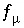
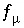
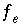
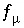

,
,  , and 
, which are equations for mole balance for each exchanger, mole balance for each element or element valence state, activity of water, and ionic strength.
, and 
, which are equations for mole balance for each exchanger, mole balance for each element or element valence state, activity of water, and ionic strength.
An initial exchange-composition calculation is needed if the composition of an exchanger is not defined explicitly, but rather, is indicated to be in equilibrium with a specified solution composition. In this case, the composition of the exchanger is not known, only that it is in equilibrium with a solution. The equations for an initial exchange-composition calculation are 
,
,
, and 
, which are equations for mole balance for each exchanger, mole balance for each element or element valence state, activity of water, and ionic strength.
For initial exchange-composition calculations, the values of  include only the aqueous concentrations and the mole-balance equations
include only the aqueous concentrations and the mole-balance equations  do not contain terms for the contribution of the exchangers to the total element concentrations. All quantities related to the aqueous phase are the same as for the solution without the exchanger present. Essentially, only the values of the master unknowns of the exchange assemblage,
do not contain terms for the contribution of the exchangers to the total element concentrations. All quantities related to the aqueous phase are the same as for the solution without the exchanger present. Essentially, only the values of the master unknowns of the exchange assemblage,  , are adjusted to achieve mole balance for the exchanger. Once mole balance is achieved, the composition of each exchanger is known.
, are adjusted to achieve mole balance for the exchanger. Once mole balance is achieved, the composition of each exchanger is known.
All equations for initial exchange-composition calculations are included as equality constraints in the solver. No equations are optimized and no inequality constraints are included.
An initial exchange-composition calculation is performed only if the exchanger is defined to be in equilibrium with a specified solution. The distribution of species for this solution has already been calculated, either by an initial solution calculation or by a batch-reaction or transport calculation. Thus, the values of all master unknowns related to the aqueous phase are known and are used as initial estimates for the exchange calculation. The initial estimate of the master unknown for each exchanger is set equal to the moles of exchange sites for that exchanger.
For data input to PHREEQC, definition of the initial exchange-composition calculation is made with the EXCHANGE data block (see "Description of Data Input").